ピザ窯
天然石窯の料理を、
味わってみてください。
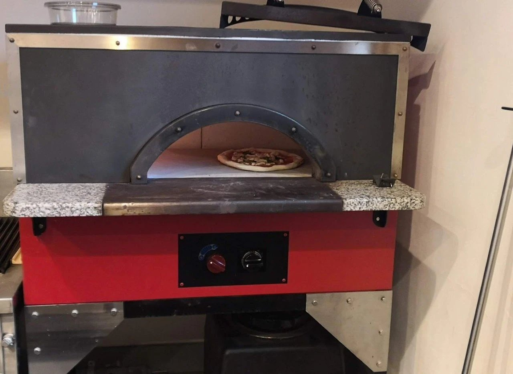
石窯が、おいしい理由。
外は焼き料理、中は蒸し料理。
ひとつの窯で、ふたつの調理が同時にすすみます。素材本来の味を、まっすぐ楽しむことができます。
水分を逃がさないから、肉類は柔らかくジューシーに。野菜は、内に閉じ込めた甘みが引き出されます。
天然石の石窯が、
さらにおいしい理由。
遠赤外線
天然石は遠赤外線を効率的に放出します。 食材の表面にすばやく火を入れることで、内側の水分を逃がさず閉じ込めます。
蓄熱性
質量の大きな自然石は、しっかりと熱を溜めます。 形状の工夫で窯内部は 400 ℃まで上がり、食材の内側までしっかり火を通します。
制作記 設計＆調達。
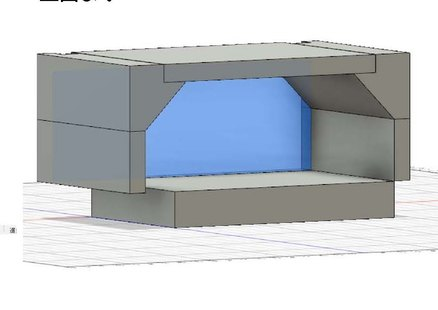
石の組み方を、3 次元設計で評価。
狙った窯内部の形状を、3 次元設計で繰り返しシミュレーション。自然石ならではの、自由な組み方を活かして詰めていきます。
さらに石の外側には断熱材を貼り付けて、熱を逃がさない高効率の石窯を狙っています。
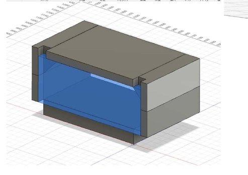
寸法と熱効率を、両立する。
外形・内空・断熱の厚みまでを描き起こし、扱いやすさと熱効率を両立する寸法を探っていきます。
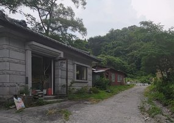
福島県産の、白河石。
耐熱性、熱に対する強度、そして赤外線の放出に有効な鉱物を含む白河石。
福島県と茨城県の県境にある石の丁場まで足を運び、自分の目で選んで調達してきました。
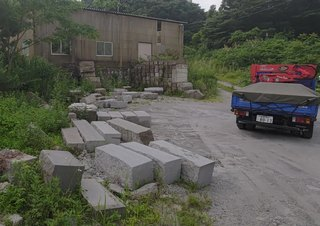
石を選ぶ、ところから。
丁場に並ぶ切り出し材の一つひとつを確かめながら、窯にふさわしい石を選別。山から、窯のかたちが始まっていきます。
制作記 組付け、トライ。
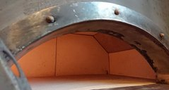
自然石を、テスト機に装着。
石窯メーカーさんに依頼し、白河石をテスト窯に取り付けました。 まずは火を入れて、石が窯としてしっかり育つかを確かめます。
もちろん、性能を確かめるためにピザも焼いてみます。
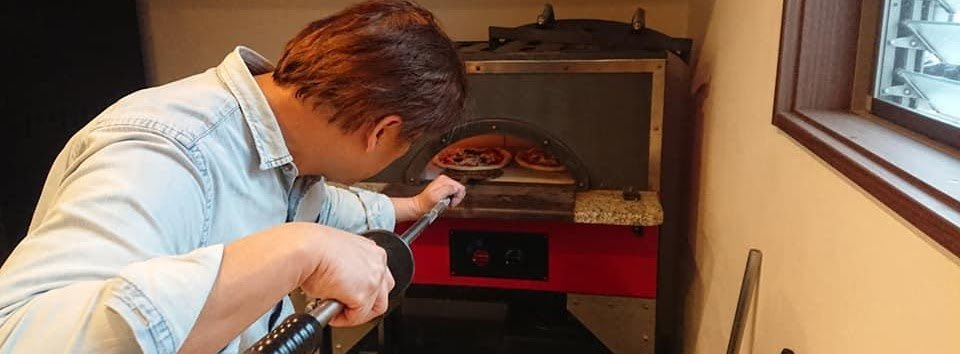
テスト機で、初のピザ焼き。
パーラー（ピザヘラ）で窯にすべりこませる、その瞬間。
ちゃんと焼けるか、ドキドキの時間です。
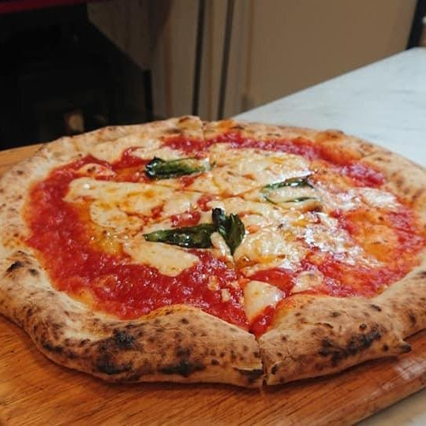
焼き上がり。
石を加工したときの水分が、内部に残っていたまま。
本来の性能の 80 ％程度しか発揮できない状態でのテストでした。
それでも、ピザの焼き上がりは通常の窯と同レベル。
「20 ％の伸びしろを残した状態で、この仕上がり」というメーカーさんの評価をいただきました。
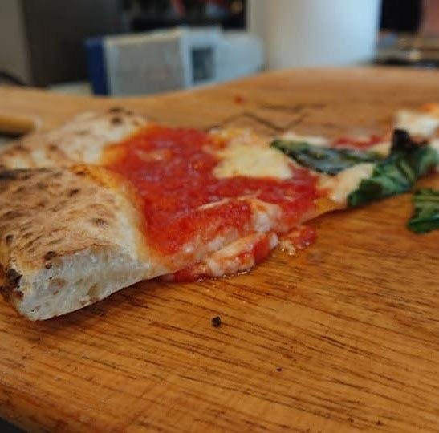
耳の、断面まで。
表面はしっかりと色づき、内側はもっちりと気泡を含んだ層に。
石窯の熱が、生地のすみずみまで届いた証です。
制作記 炉床を、変える。
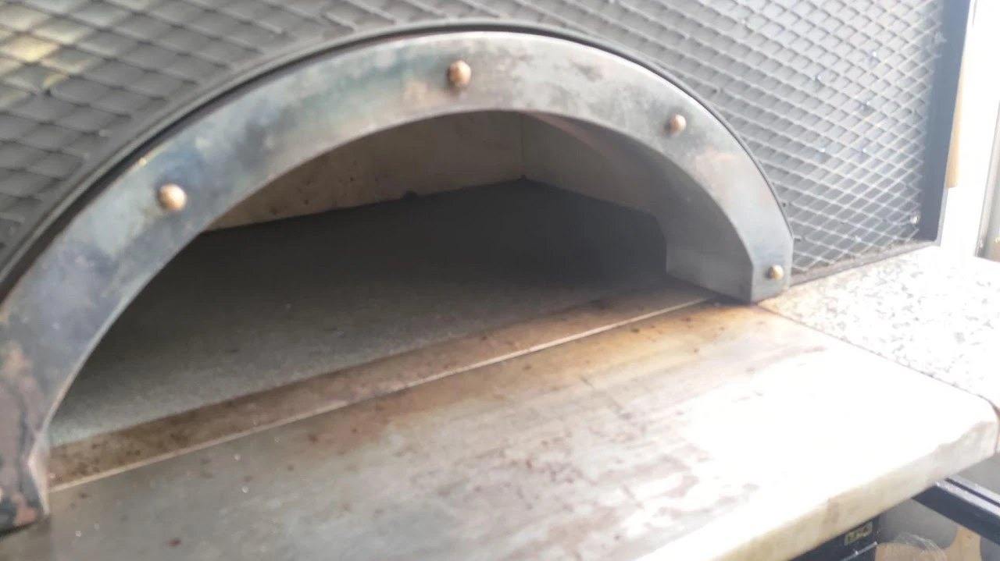
課題と、改善。
久我山に石窯を持ち込み、ピザやいろいろな食材を焼きながら、より高い性能を発揮できるよう改良を進めていきます。
使い続けて見えてきた、新たな課題。
- 連続的にピッツァを焼くと、炉床の温度が下がってしまう
- 炉床の石が柔らかく、パーラー（ヘラ）で擦ると削れてしまう
- 蓄熱性と硬さ、両方を満たす石材へ切り替えが必要に
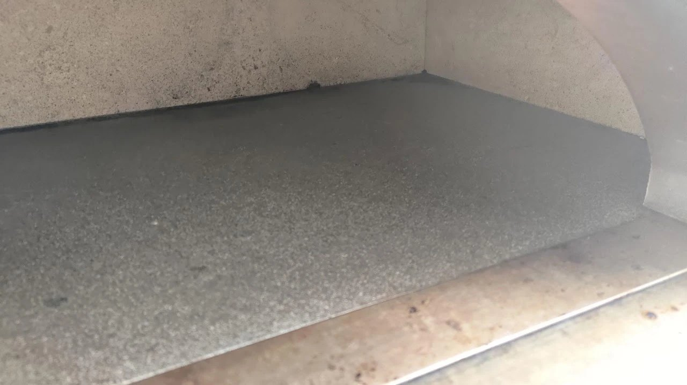
床石を、男鹿石へ。
炉床の石を、安山岩で質量の重い秋田県産の男鹿石へ変更。
硬度と蓄熱性を、ひとつの石にまとめます。
床からの熱量が高くなり、調理人にとっても使いやすい窯になった――と、評価をいただきました。
天然石窯の料理は、
「天然石窯久我山キッチン」でご提供しています。
Stone Oven Cooking — Served at Our Kitchen in Kugayama.
プロジェクト一覧へもどる →